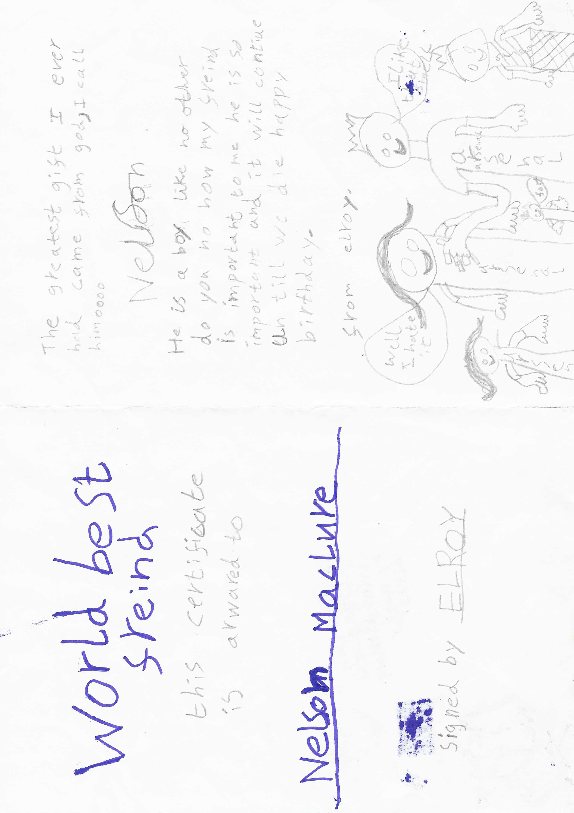
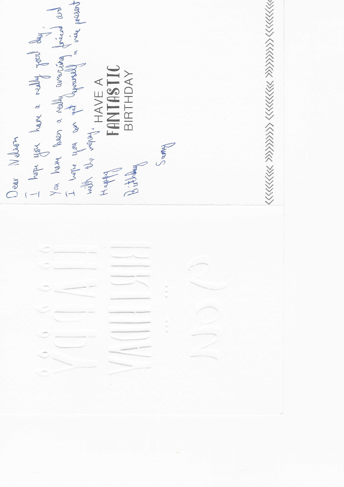
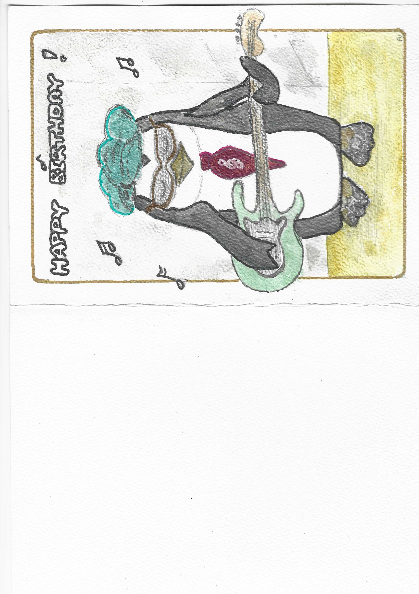
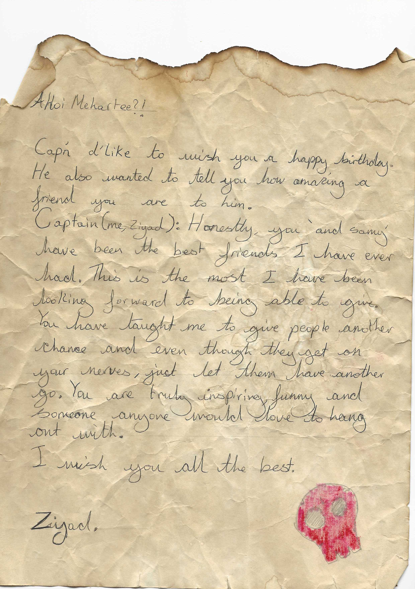
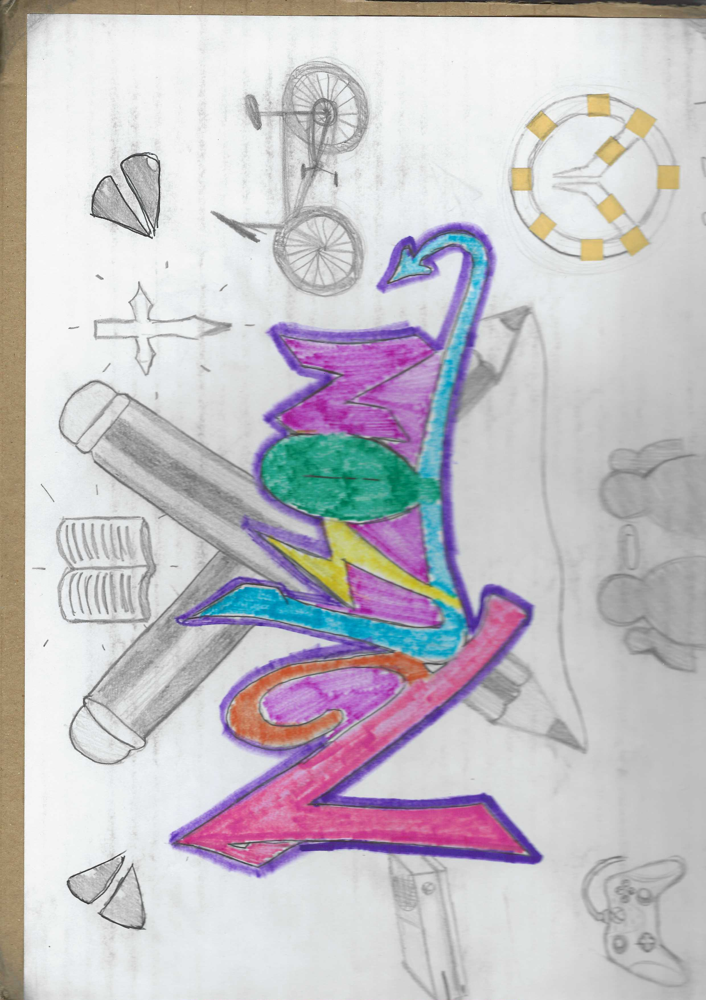

Today I was asked to organise a box full of bits and bobs to prepare us for moving house. The box (about the size of a small bathtub) was overflowing with memorable items from my past - it was now my job to cut down what was there so that the neat could neatly fit on top. Over half an hour, I was able to separate everything into a few piles. The process prompted some unique thoughts:
I wasn't particularly effected by revisiting my history via these random objects but birthday cards left the most impact.

On my 7th birthday Elroy must have made me this wonderful card. I enjoy how much effort he put into it. Recieving a card with so much heart put into it is more valuable than a gift. The 'worlds best friend' award is very creative, and he was even kind enough to sign it. Even better are his drawings, which depict what looks to be my family wearing Arsenal T-shirts. My littlest sister says 'fart' followed by my dad: 'i like that smell' and 'well I hate it' from my mum. Almost the only thing I can remember of him is that he supported Manchester City. On our way home from school one day I offered him 5 house points if he changed and supported Arsenal. He agreed and I wrote down the 5 house points for him in my little yellow notebook. Catastrophically though, my heart was broken when I overheard him cheering for Manchester City again a few days later. First traumatic event for me. Nevertheless, after moving away from north London not long after this birthday party, we lost contact and I have never seen him since. I hope he continues to bless people with his enthusiasm. I hope he knows that our friendship is sealed 'until we die' (as he has put it). And I hope he knows he still owes me 5 house points.


These cards are from the same person but separated by years. I'm not exactly sure when the first card is written. I've known Samy for about 7 years and I hope to know him for much longer. The second card was actually a drawing by Samy and his mum (who's initials are in the bottom right hand corner). With both of these cards, I feel honored recieving them. I feel cared for, I feel validated since they demonstrate that Samy is prepared to show me the same kindness, care and deliberation he so excellently puts into everything he does. Thank you Samy.


I'd like to honor these creations by someone who I've lost contact with. I remember the day Ziyad brought me this pirate themed birthday letter. I remember him describing how he dipped the paper in tea leaves and singed the edges. Even the significance of the symbols on the picture on the right hand side shows his care and kindness and talent. They're totally relevant and specific as well as being expertly drawn. Ziyad's birthday was only this month. I'll send him a message.